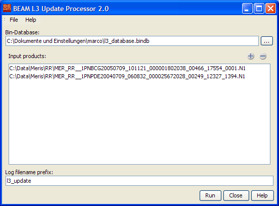

| Processor Description - Level 3 Binning Update Processor |
|
The Level 3 Binning Update Processor accumulates any number of input products to the bin database selected.

 to invoke a
standard file dialog.
to invoke a
standard file dialog. button invokes a standard
file dialog to select input products. The
button invokes a standard
file dialog to select input products. The  removes all selected products from the list. Click on an item to select it.
Press "STRG" and click to add items to the selection. Press "SHIFT"
and click to select a range of items.
removes all selected products from the list. Click on an item to select it.
Press "STRG" and click to add items to the selection. Press "SHIFT"
and click to select a range of items.The following table describes the L3 Update Processor specific processing request file parameter. For a detailed description of the processing request file concept and file specification please look at the general description section.
| Parameter name | Description | Type | Valueset |
|---|---|---|---|
| type | Request type. Mandatory attribute of the Request element |
String | "BINNING" |
| process_type | The request process type identifier. | String | "update" |
| database | Absolute path to bin database to be created. | Path | - |